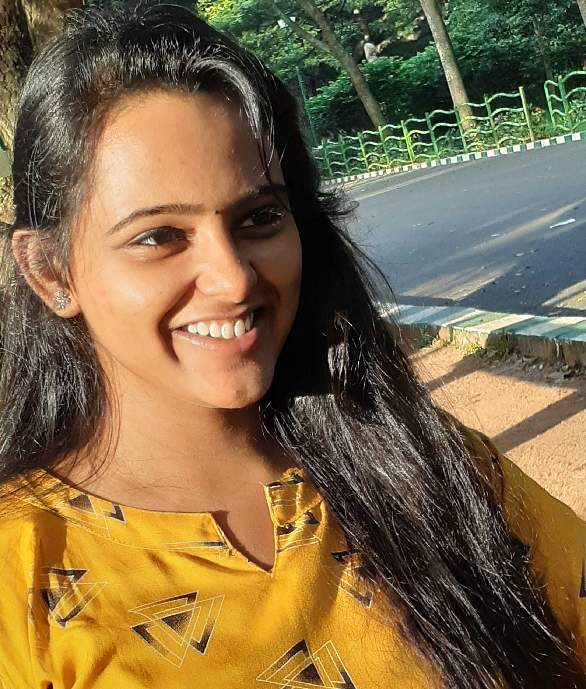
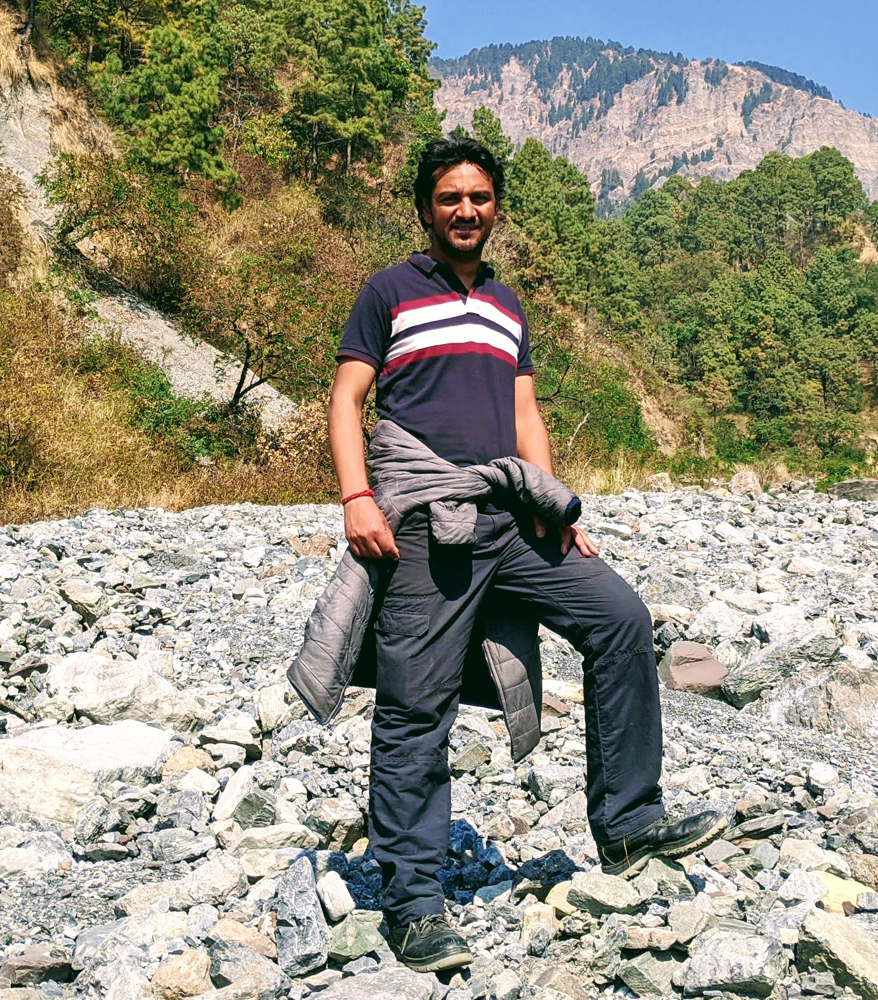

About us

What is CosmicVarta?
Astronomy is truly a global subject. The boundaries between the nations, people, ethnicities do not exist for astonomers. We all think of the entire humankind as one. Hence, it becomes necessary and a responsibility for profesional astronomers to present a platform where the authentic research being carried out is presented and discussed in language which a ‘non-expert’ individual can understand. Moreover, while high quality research is communicated through the reputed journals, the students who are not dealing with he subject on a day to day basis might find it diiffuciut to grasp.
We thought over this problem and came up with CosmicVarta as an online platform where we simplify the current astronomical research being carried out so that people from every background can grasp the essence of the results. CosmicVarta is intended to be a portal where the current research is presented ina simplified way and subsequently discussed by people so that everyone can have a glimpse into the excitng world of astronomical research. Through this portal, we will present reviews of recently published articles, interviews with the eminent scientists working in the field of astornomy and astrophysics all over India and also serve as a platofmr to discuss the research in a simplied manner.
Research in astronomy is pursued at only a handful of research insitututes, hence prospective students may often find it challenging to find relevant information. Through this portal you may find information regarding the various career options available, various positions available at astronomy institues in india and the other related information. This portal will also serve as a information hub regarding various softwares and databases that are available to be used by the public for free. We can even help students who are looking for short term projects using such huge volume of data by connecting with the scientists working actively in that area of research.
Come join us on a journey which will take you the wonderful world of stars, galaxies and beyond; and feel enthralled by unlocking of the keys to the mysteries of the universe which the scientists are doing on a daily basis.
Who are we?
We are a group of enthusiastic young researchers, mostly PhD scholars in astrophysics, who wish to make available lndian astronomy research to all interested minds. We keep a track of recent research papers published by lndian astronomers. Their works are written in simple language and published for others to read, understand, enjoy and perhaps motivate them to pursue astronomy research in the future.
Allow us to introduce ourselves :)

Anusha R
Im Anusha. I’m currently working as a research project assistant at CHRIST (Deemed to be University). My research mainly focus on emission-line stars in general relating line properties, formation mechanism, statistical analysis depending on stellar parameters and the circumstellar environment, their disk physics. I am currently working on spectroscopic analysis of Disk forming hot stars and photometric analysis of the effect of binarity on the disk properties. Personally, I like to watch crime thrillers a lot. I’m a classical dancer and love to write.
Gourav Banerjee
I am Gourav Banerjee, pursuing PhD in stellar astrophysics at the Christ (Deemed to be University). My area of research is stellar spectroscopy, especially observational studies of emission-line stars such as Classical Be (CBe) and Classical Ae (CAe) stars. My PhD thesis aims to study (using optical spectroscopy) the variability (both transient nature and V/R variability) of selected CBe stars and also understanding the disc parameters of Galactic field CBe stars as a continuation of my MPhil thesis. Moreover, I have remained involved with other projects on similar fields such as the first systematic study to identify and characterize CAe stars (paper published in MNRAS), identification and characterization of CBe stars in open clusters older than 100 Myr (paper circulated), first ever identification of emission-line stars in transition between PMS & MS phase (paper circulated), etc. Astronomy outreach is anothe field which I love from my heart. I am associated with astronomy outreach activities across Bengal and other parts of India for the past 26 years. My hobbies are reading books (mostly Bengali literature, history, and popular science) and exploring remotest places of India and abroad (sadly that is halted now). And yes, I am a Voracious EATER.. food and books give me pleasure, astronomy provides me mental peace.

Ketan Rikame
I am a PhD student at Christ (Deemed to be University). Field of Instrumentation has always fascinated me and it has been my primary research interest. However, while working with various astronomy instruments, I also got interested in learning about underlying physical phenomenon these instruments try to study. I have previously worked in optical and radio instrumentation. I am currently part of the instrumentation team at RRI and we are building an X-ray polarimeter approved to be launched on a ISRO’s dedicated satellite mission XPOSAT. I also study accretion powered pulsars which will be one of primary scientific target of our X-RAY polarimeter. I am very much interested in science popularization. Although not involved in any such activity right now, I love to talk to people about my research (and not bore them hopefully :sweat_smile:). I also love to listen/read about to fascinating research other researchers are doing. I also love football :soccer:.

Lakshitha Nama
Hello. My name is Lakshitha Nama. I am a PhD student at Christ (Deemed to be University). My PhD research aims at understanding the relationship between magnetic field and the elemental abundances in the outer atmosphere of Sun and other main sequence stars. I make use of imaging and spectroscopic data from X-ray telescopes. My hobbies including reading and painting.

Vivek Kumar Jha
Hi everyone. I am Vivek. I am a Ph.D student at ARIES, Nainital. My research so far has been about understanding the inner regions of active galaxies. My PhD thesis is aimed at resolving the inner (sub-parsec) regions of these objects through multi-band observations and infer the structure and kinematics of matter in those locations. I am also interested in exploring the various all-sky surveys which provide huge amounts of data to be accessed publicly. When not doing research, I usually go trekking in the neighbouring mountains or spend some time listening to classical music. You may find more about me here